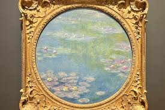

|
Monet era un artista muy poco comercial, excesivamente experimental. Pero precisamente fue eso lo que le dio fama en la exposición de 1874: Una serie de manchas de colores que representaban un paisaje mejor de lo que había sido representado nunca. Monet había descubierto su estilo, que se fue radicalizando con el tiempo.
Estos lienzos tienen un conjunto de elementos característicos, además del formato. Por un lado, no se distingue en ellos ni la orilla del lago donde yacen los nenúfares ni la línea del horizonte, lo cual ofrece una clave del propósito del pintor. Por el otro lado, el estilo de Monet se hace cada vez más exigente para el espectador.
Monet tomaba un riesgo deliberado. En cierto sentido, no pensó solo en el resultado de un cuadro como fenómeno singular, no al menos en la serie de los lienzos monumentales. Pensó en un concepto y en las condiciones necesarias para poder apreciarlo. Casi podríamos decir que Monet se acerca, muy remotamente, a una idea de instalación. Concibió la obra no como objeto único sino como experiencia conjunta.
|
Monet decía sentirse tentado a la idea de que estos lienzos envolvieran el interior de una sala, para producir la ilusión de estar sumergido en aquellas escenas, sin horizonte ni orilla, y esperaba que aquel efecto se tradujese en un refugio para la meditación y la paz, tal como lo atestigua una carta fechada en junio de 1909.
|

El artista declaró sobre lo que él llamaba sus «paisajes acuáticos»: «Un instante, un aspecto de la naturaleza lo contiene todo»
|
|